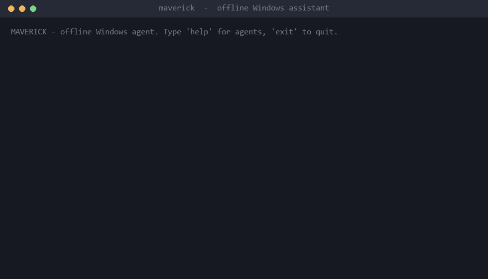

An offline AI assistant for Windows
Type what you want in plain English. MAVERICK understands it with its own trained models, hands it to one of 14 specialist agents, checks it for safety, asks before anything risky, and does it. No cloud, no API keys, nothing leaves your PC.

Real answers to real requests, on throwaway files in a demo folder.
How a request flows
Only the blue steps are "AI". They only propose an action; the green safety steps always run, whoever proposed it.
Learned splitter: "copy it and then zip it" becomes two steps.
MiniLM encoder (ONNX) + logistic regression, with a confidence score.
Keyword rules, then a local LLM (Llama 3.2 via Ollama) as a last resort.
A tagger finds the source, destination and new name.
Never overwrite, no system folders, Recycle Bin only.
Asks y/n, then re-checks before acting.
Understanding (agent.py) is kept separate from doing (ops.py), so the
brain could be replaced three times, after trying nine different models, without touching a single operation.
The 14 agents
Each one is plain, testable Python. Here's what you can say to them.
Files
Copy, move, rename, size. Never overwrites.
clone notes.txt into D:\backupSearch
By name, kind, date, size or text; learned ranking; k-means grouping.
find pdfs from last weekArchive
zip / tar, AES-256 passwords, list, safe extract.
zip D:\work with a passwordCleanup
Optimal "free up N GB" plan (knapsack), Recycle Bin only.
free up 5 gbProcess
Top programs, process tree, frozen apps, leaks, anomaly detection.
any unusual programs runningHardware
RAM, slots, CPU, battery, disks, disk-full forecast.
is my laptop chargingPower
Windows 11 power modes and laptop brightness.
switch to power saverServices
Show, start, stop, restart; core services protected.
restart the spooler serviceNetwork
IP, Wi-Fi name and signal, adapters on/off.
what's my ipDevices
Problem devices, USB list, restart a device.
show devices with problemsAccounts
Who has admin rights on this PC.
who has admin on this pcWatch · Logs · Jobs
Background folder watcher, log rotation, maintenance planning.
move every new pdf in downloads to documentsMeasured, not guessed
Every brain was tested the same way: 5-fold cross-validation on 1,374 labelled sentences (46 operations + "unknown"), plus 84 hand-picked hard cases. A new model replaced the old one only when it scored higher.
| Brain | As MAVERICK runs | Hard cases | |
|---|---|---|---|
| Naive Bayes (first brain) * | 83.8% | 60% | |
| Logistic regression, TF-IDF + word pairs | 83.2% | 73% | |
| Ensemble: LR + Bernoulli NB + linear SVM | 84.5% | 75% | |
| MiniLM (ONNX) + logistic regression | 91.6% | 86% |
* measured earlier, on a smaller dataset. Full write-up, including what failed and why: RESULTS.md.
Written from scratch in NumPy
- Naive Bayes, logistic regression, SVM, k-NN, decision tree
- MLP with backpropagation, soft-voting ensemble
- Isolation forest, k-means, regression, learning-to-rank
- Knapsack planning, constraint solving (CSP)
Other results
- File-name tagger: 93.0% vs 79.0% for regex
- Multi-action splitter: 95.8% cut right
- LLM tool calling: 88.1% → 95.2% with few-shot
- Search ranking: MRR 0.718 vs 0.339 disk order
Run it
Needs Windows 10/11 and Python 3.12+. Training takes about a minute; trained files stay on your PC.
# install and train git clone https://github.com/redrighthand2007/MAVERICK.git cd MAVERICK pip install -e . python -m maverick.brain.train python -m maverick.brain.multi # chat, or one request at a time maverick maverick "how much ram do i have"
Optional extras (the MiniLM brain, the local LLM) are described in the README.